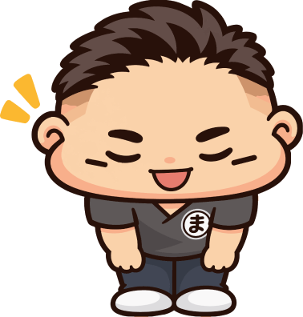
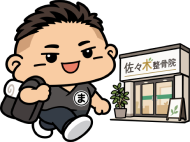
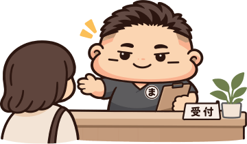
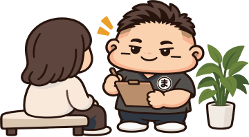
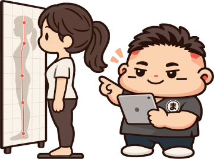
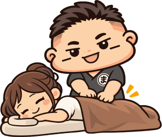
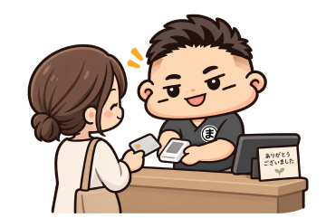
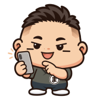

服装について
動きやすい服装でお越しください。ハーフパンツ等の貸し出しもご用意しています。女性専用もご用意しております。
FIRST VISIT

安心してご来院いただくために。
WELCOME
「どんな施術をするんだろう」「自分の症状でも相談できるかな」
はじめての整骨院には、不安や疑問もあると思います。
佐々木整骨院では、まず現在のお身体の状態やお悩みを確認し、わかりやすくご説明します。
無理に施術を進めず、納得いただいたうえでご案内します。

FLOW
来院前にWeb問診票へご回答いただくと、当日の受付がスムーズです。
STEP 01

ご来院後、受付を行います。ご不明な点はお気軽にお伝えください。
STEP 02

お悩みや症状について詳しくお伺いします。
STEP 03

姿勢や身体の動きを確認し、現在の状態を把握します。
STEP 04

お身体の状態に合わせて施術を行い、今後の通い方についてわかりやすくご説明します。
STEP 05

お会計後、必要に応じて次回のご予約も承ります。
WEB QUESTIONNAIRE
シセイカルテ
当院では、より的確でお身体に合わせた施術を行うため、AI姿勢分析システム「シセイカルテ」を導入しております。
ご来院前に、スマホやパソコンから事前に問診（現在の症状や痛む場所など）をご入力いただくことで、当日の受付とカウンセリングが非常にスムーズになります。
以下のリンク、またはQRコードより、事前のご入力をお願いいたします。
確認用：URL未設定WEB問診
スマホのカメラで読み取ってご回答いただけます
BEFORE VISIT
ご来院前に、以下の内容をご確認ください。
動きやすい服装でお越しください。ハーフパンツ等の貸し出しもご用意しています。女性専用もご用意しております。
お子さま連れでもご来院いただけます。ご不安な点があれば、事前にご相談ください。
当院の診療はすべて自費診療（保険適用外）となります。健康保険証はご使用いただけませんので、あらかじめお間違いのないようご注意ください。
店頭前に2台ご用意ございます。
現金、クレジット、交通系IC、電子マネー各種対応しております。
平日20:00 / 土日18:00まで受け付けております。（施術開始時間です） 営業時間外の施術も事前相談にて対応いたします。
その他ご不明な点がございましたら、LINEまたはお電話にてお気軽にお問い合わせください。

RESERVE
ご予約はWeb予約が便利です。お急ぎの方はお電話、ご相談はLINEからも承っております。
24時間いつでもご予約いただけます。初めての方もこちらから。
Webで予約（新しいタブで開きます）気になることを気軽に
ご相談いただけます。
お急ぎのご相談は
お電話が便利です。
当院への営業・勧誘を目的としたお電話はご遠慮ください。